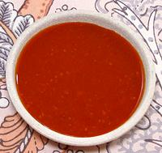

|
Chili Garlic SauceBurma - Nga Yoke Thee Achin | ||||
| Makes: Effort: Sched: DoAhead: |
1-3/4 cup ** 15 min Yes |
This all purpose Burmese table condiment will likely ruin you for bottled sauces - and it's so easy to make. It's fine too for Thai and Lao - the three share borders and elements of each other's cuisines. I love this stuff as a dip for raw vegies, shrimp, smelts, meats, etc. | |||
|
|
1 1/4 3/4 3 1/4 3/4 |
c c c T c c |
Chili, dry red (1) Garlic (2) Water Sugar (3) Fish Sauce (4) Rice Vinegar (5) |
Make - (15 min)
|